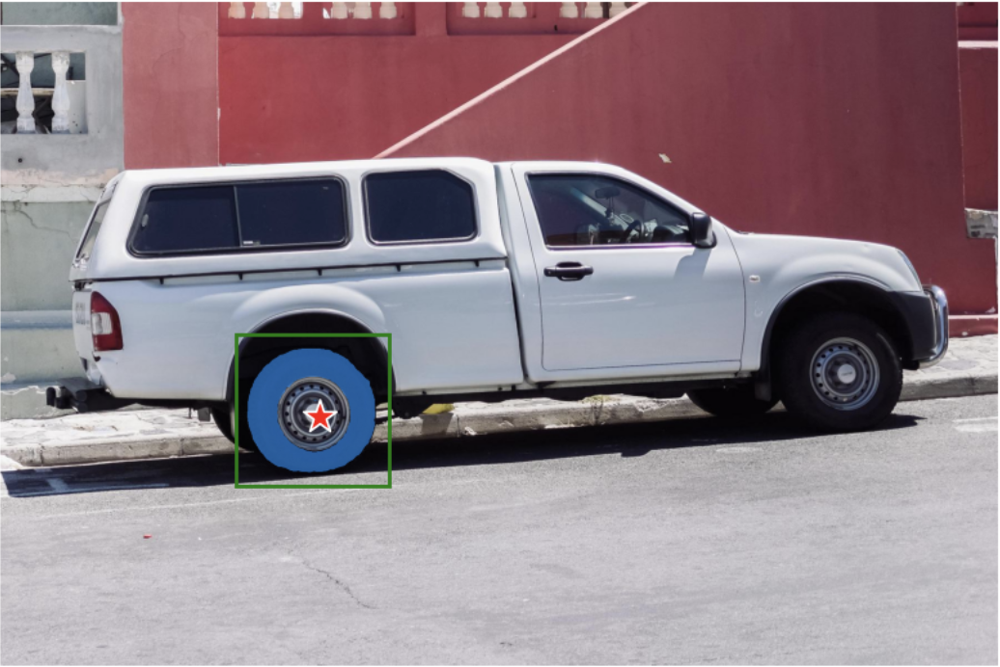
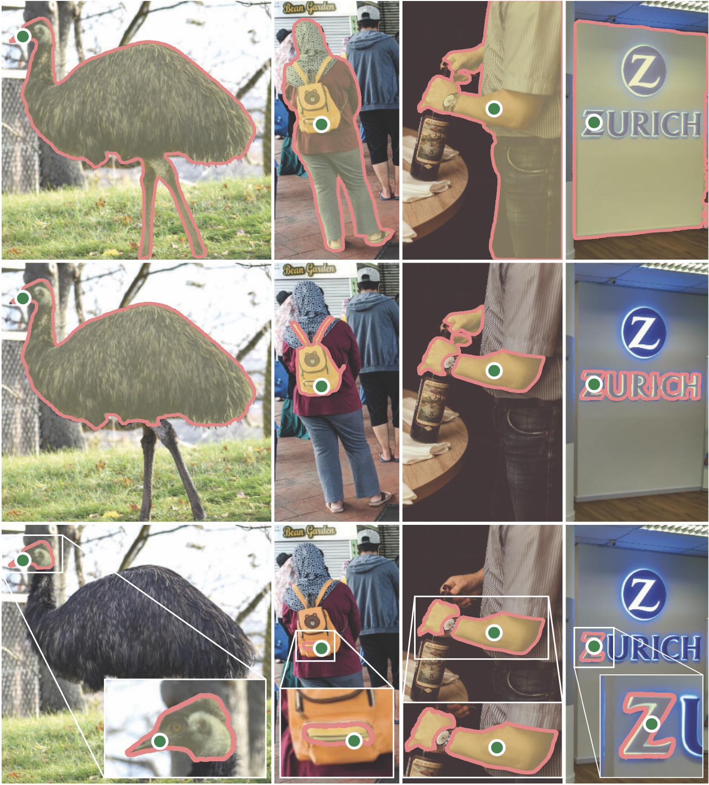
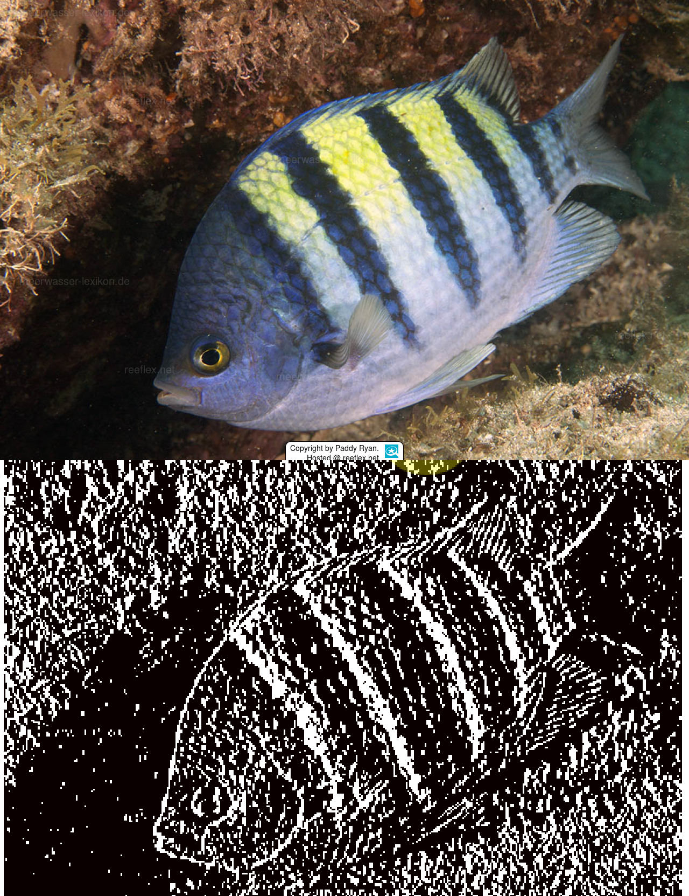

🚀 YOLO+SAM Turbo Maskengenerierung (Mod 090)
mod_090_yolo_sam_maske_erzeugen_turbo.py - Hochoptimierte Multi-Core Verarbeitung für 13.000+ Bilder
🎯 Modulüberblick
Dieses Modul kombiniert YOLO Object Detection mit SAM Segmentation für ultra-schnelle Instance Mask Generierung durch Multi-Core Processing.
Turbo Power: Stell dir vor, YOLO findet Objekte wie ein Adlerauge und SAM schneidet sie präzise aus wie ein Chirurg - aber das System nutzt 16 Gehirne gleichzeitig und kann 50GB an Informationen gleichzeitig verarbeiten!
🚀 Extreme Performance
- 16 CPU-Kerne ProcessPoolExecutor mit maximaler Parallelisierung
- 50GB RAM Optimiert für massive Batch-Verarbeitung
- 32 Bilder/Batch Intelligente Batch-Größe für optimalen Durchsatz
- 6x Speed Boost Gegenüber sequenzieller Verarbeitung

🚀 Extreme Performance Specs
16
CPU Kerne Maximum
32
Bilder pro Batch
50GB
RAM Optimiert
6x
Speed Boost
💪 Turbo-Konfiguration
13.000+ Bilder Kapazität - Das System wurde entwickelt, um massive Datasets in realistischer Zeit zu verarbeiten.
1.000 Cache-Größe - Intelligente Pufferung verhindert Memory-Overflow bei großen Batches.
Production Scale: Für 13.000+ Bilder ist Einzelverarbeitung unpraktikabel - Multi-Processing mit Batch-Optimierung macht es in realistischer Zeit möglich.

🎭 SAM Integration Turbo
🤖 Segment Anything Model Power
- 🧠 ViT-B Architecture: Optimales Geschwindigkeit/Qualität Verhältnis für Batch-Processing
- 📥 Auto-Download: Automatischer sam_vit_b.pth Download (375MB) mit Fortschrittsanzeige
- 🎯 Box-Batch Prediction: Alle YOLO-Boxen eines Bildes parallel verarbeitet
- 🚀 Single Image Set: predictor.set_image() nur einmal pro Bild für Performance
- 💾 Memory Efficient: Masken sofort gespeichert, nicht im RAM gehalten
- 🖥️ Device Agnostic: Automatische CUDA/CPU Detection pro Worker

🔄 Turbo-Pipeline Flow
⚡ 8-Stufen Hochgeschwindigkeits-Pipeline
1
SAM Download: Automatischer Checkpoint-Download mit Streaming & Progress
2
Image Discovery: Glob-basierte Sammlung aller .jpg Dateien
3
YOLO Loading: Detection Model Setup mit vortrainierten Gewichten
4
Batch Creation: Bilder in 32er-Batches aufteilen für optimale RAM-Nutzung
5
Multi-Processing: ProcessPoolExecutor mit 16 Worker-Prozessen starten
6
SAM per Worker: Jeder Prozess lädt eigene SAM-Instanz für parallele Verarbeitung
7
Batch Processing: YOLO Detection + SAM Segmentation in Parallel
8
Output Generation: Masken + JSON-Metadaten strukturiert speichern

💡 Warum diese Turbo-Architecture?
- Production Scale: Für 13.000+ Bilder ist Einzelverarbeitung unpraktikabel - Multi-Processing mit Batch-Optimierung macht es in realistischer Zeit möglich.
- Memory Efficiency: 50GB RAM Budget erlaubt 16 SAM-Instanzen parallel zu halten ohne Swapping - jeder Worker arbeitet optimal.
- I/O Optimization: Bulk-Parsing, Batch-Prediction und paralleles Speichern eliminieren typische Flaschenhälse bei großen Datasets.
- Fault Tolerance: Jeder Worker ist isoliert - ein Fehler stoppt nicht die gesamte Verarbeitung.
Class Mapping: YOLO-Klassen (0=riffbarsch, 1=taucher) werden automatisch zu sprechenden Namen konvertiert und in der Ordnerstruktur organisiert.